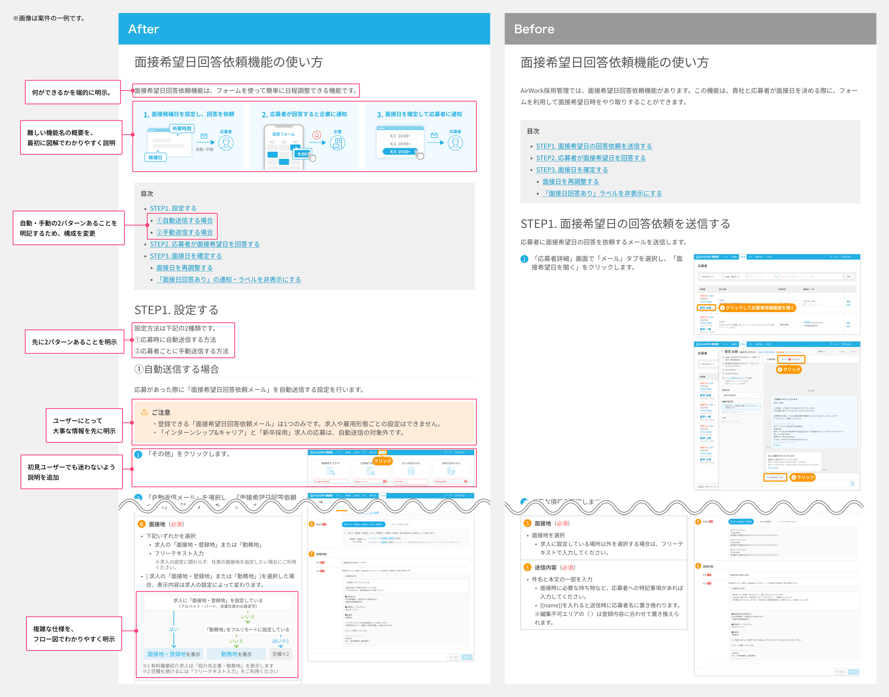

- 制作媒体
- PC・SP
- 制作期間
- 1日〜1ヶ月（案件による）
- 制作人数
- ディレクター2名、デザイナー1名（担当領域）
担当内容
情報設計 / ライティング / 図解作成/ 進行管理
制作内容
- サービスの新機能などのお知らせページやヘルプページを作成
- キャプチャや図解を用いて、複雑な仕様の手順をわかりやすく説明
- Airサービスのガイドラインに合わせて、文体・トンマナを統一
新機能・機能改善に伴うFAQページ・お知らせページの制作を担当しました。
要件書をもとに、情報の整理・構成・文章表現を検討。
不足している情報の追加や、不要な情報の削除を提案し、ユーザーにとってわかりやすいページを作成しました。
平均5案件、多い時には10案件を並行して担当。
案件が多い場合は関係者と相談しながら納期を必ず守るよう進行管理を行いました。
AIの活用
Claude code、Gemini、Corsorなどを用いて効率化を図りました。
Zendeskを用いた実装において、AIにJsonデータを渡しhtmlを自動生成させ、チェックまで自動化したことで工数を7割削減することに成功しました。
また、AIセルフレビューの導入を行い、テキストガイドラインチェックや案出しをAIでサポート。
自身の工数とディレクターのレビュー工数を削減しました。
FAQ制作実績
特に仕様が複雑だった3件を抜粋して掲載しています。
面接希望日回答依頼機能の使い方
新卒採用の作成・掲載にあたっての確認事項
複数の求人を一括入稿したい